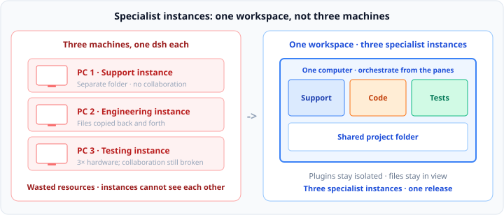

Multi-instance DeepSeek Harness
Multi-instance DeepSeek Harness
Unlimited isolated instances
on one desktop
Support, engineering, and testing cannot share one dsh. Each instance is a complete, isolated Harness — in one workspace, ready to export when an instance is configured.
Windows · macOS · Linux · GitHub Releases

- Support
- Code
- Tests
- Orchestrate
- Build
- Docs
- Test
- Review
- Frontend
- Backend
- Tests
- Package
Isolated plugins · one workspace · export when ready
01 Isolate
One instance cannot host multiple workloads
Unrelated plugins in one preset make the model call the wrong tools. Isolate the workloads first — then collaborate, then deliver.
The problem
Customer messages, code, and tests share one DSH_HOME.
The tool list grows until the model misroutes.
Three capability sets cannot coexist in one preset.
Agent presets do not resolve this: only one mounts per session, and switching after a turn is locked.
Per DeepSeek Harness: Agent Presets and Personas
The approach
Each instance is a complete, isolated dsh — own process, port, and
DSH_HOME. Create as many as you need. Plugin environments never conflict.
Isolate, then run in parallel, then package.
02 Collaborate
Specialist instances, one workspace
Plugin sets stay isolated. Project files stay in view. You orchestrate from the panes — a configured instance is ready to export.
Each instance is a specialist: support, engineering, testing. Plugins are its toolchain, so they must be isolated.
Spreading them across three machines is three separate environments — multiplied hardware, files copied back and forth, no shared state. Place them on one computer, against the same project folder. Not three unrelated windows — one workspace advancing one release.


03 Monetize
When the instance is ready, export the pack
You deliver a runnable specialist instance — isolated and coached in one workspace, not another week of remote setup.
After configuring support, engineering, and testing, delivery often fails not on “can they use it”, but because every handoff feels like rebuilding the project.
- Cannot reproduce Days later even you cannot confirm which plugins and which preset constitute the product.
- Cannot hand off A README never guarantees a clean install; shipping the folder invites redistribution.
- Cannot scale The next customer still requires the same remote setup. Delivery time dwarfs the time spent configuring.
A .dshpack encapsulates that configured instance as a file. They import and run.
Bind a machine code or password; forbid re-export. Configure several instances, export several packs.


Get started
Install the app. Create instances.
Windows, macOS, and Linux. The wizard pulls the runtime. Then you split panes.
- Install Download the build for your platform from Releases.
- Initialize Choose a data folder, pull the runtime, create the first instance.
- Split Create more instances. Drag tabs to the edges. Run them in one workspace.
Free download · not code-signed yet · runtime downloads on first run

Next
From isolation to delivery,
on one desktop.
Isolate the workloads. Collaborate in one workspace. Package a configured instance as a .dshpack.